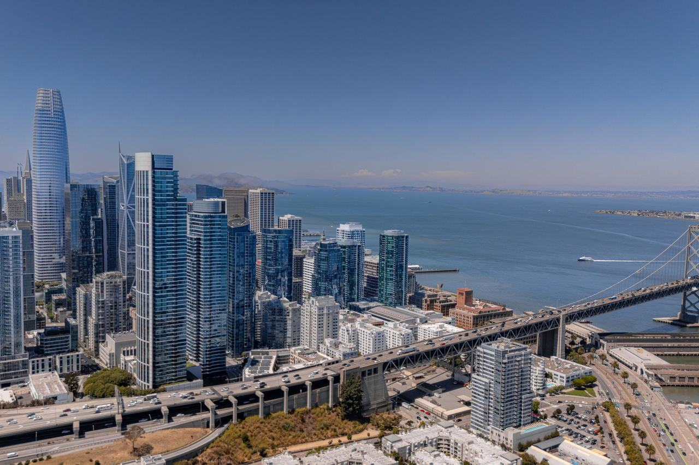

East Cut
The blocks between Market and Folsom around First, Second and Fremont Streets — the assessor's Financial District South, rebuilt as an office district under the 1985 Downtown Plan. Coverage here begins with the buildings named in the city's public-art and privately-owned-public-open-space inventories.

Map
Named buildings and landmarks
-
1
-
2
-
3
-
4
-
5
-
6
-
7
-
8
-
9
-
10
-
11
-
12
Also here: Drexler Estate Building, Greeley Building, Hunt-Mirk Building, Lent Building, Taylor Building, Bothin Real Estate Co. Building, Federal Security Co. Building, Marwedel Building, Aaron Kahn Building, Adolph Gasser, John G. Rapp Machine Shop, Crane Co. Building, Electrical Building, J.E. Bier Building, Thomas P. Crellin Estate Building, Langley and Michaels Building, Joseph Magnin Warehouse, C.C. Moore Building, Graphic Reproduction Building, E. J. Brooks & Co. Building, Butler Building, Sailors' Union of the Pacific Building, 50 Beale Street, Folger Coffee Building, 188 Spear Street, Providian Financial Building, One Ecker Square, 301 Howard Street, 100 First Plaza, Hills Plaza, Gap Building, Marine Electric Company Building, Natoma Street Lofts, Foundry Square II, Foundry Square IV, Babcock & Wilcox Warehouse, Foundry Square I, Foundry Square III, 350 Mission Street, The Jasper residential tower, 181 Fremont, Park Tower at Transbay, Beck Electric Supply Building, F. C. Jansen Building, Neustadter Brothers Building, Pacific Gas & Electric Company General Office Building, Printing Arts Building, Transbay Terminal.
Streets documented so far
- 1st Street
1 building, built 1988. - Beale Street
2 buildings, built 1967. - Brannan Street
9 buildings, built 1908–1959; 4 in the South End Historic District. - Bryant Street
28 buildings, built 1906–2015. - Federal Street
2 buildings, built 1912–1923; 2 in the South End Historic District. - Folsom Street
1 building. - Fremont Street
3 buildings, built 1928–2018. - Harrison Street
11 buildings, built 1925–1989. - Hawthorne Street
10 buildings, built 1900–1987; 2 in the New Montgomery-Mission-Second Street Conservation District. - Howard Street
6 buildings, built 1987–2019. - Jack London Alley
2 buildings, built 1923–1929; 1 in the South End Historic District. - Jessie Street
1 building, built 1982. - Lansing Street
1 building, built 2016. - Market Street
5 buildings, built 1964–1981. - Minna Street
2 buildings, built 1910–1999; 1 in the New Montgomery-Mission-Second Street Conservation District. - Mission Street
6 buildings, built 1981–2015. - Natoma Street
7 buildings, built 1907–1971; 6 in the New Montgomery-Mission-Second Street Conservation District. - New Montgomery Street
10 buildings, built 1901–1988; 10 in the New Montgomery-Mission-Second Street Conservation District. - Perry Street
6 buildings, built 1900–2020. - Second Street
6 buildings, built 1900–2016; 1 in the New Montgomery-Mission-Second Street Conservation District. - Shaw Alley
1 building, built 1906. - South Park
1 building, built 1907; 1 in the South Park Historic District. - Stevenson Street
2 buildings, built 1986–1989. - Stillman Street
8 buildings, built 1906–1944. - Sutter Street
2 buildings, built 1907–1922. - Third Street
14 buildings, built 1900–1999; 1 in the SoMa LGBTQ Historic District.
Parks and public spaces
- Guy Place Mini Park
Mini park, 3,920 sq ft. - South Park
Neighborhood park or playground, 1.1 acres.
Historic districts here
Adjacent neighborhoods
Market Street separates these blocks from the Financial District to the north. South of Market lies west and South Beach south towards the ballpark. This site files the three separately; the city's own boundary counts them as one Financial District/South Beach neighborhood.